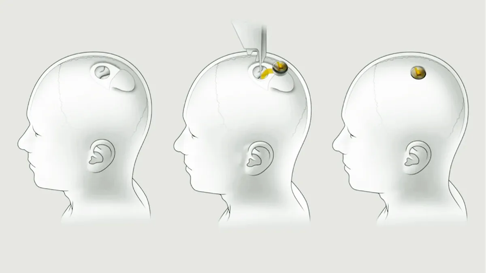

La misión principal es crear una interfaz cerebro-ordenador (BCI) capaz de restaurar la autonomía de personas con necesidades médicas insatisfechas y potenciar el ser humano. En la actualidad, buscamos brindar a las personas con tetraplejia o personas que sufran ELA la capacidad de controlar sus computadoras y dispositivos móviles mediante sus pensamientos.
Objetivo
Desarrollar una maquinaria con interfaz cerebral y banda ultra-ancha que permita la conexión entre humanos y máquinas, con una integración total con la inteligencia artificial. Esto incluye la posibilidad de mover un personaje en un videojuego utilizando únicamente el poder de tus pensamientos.
En qué consiste
Se implementaría a través de un robot quirúrgico, gracias a su precisión. En el propio cerebro se pondrán sensores y electrodos de manera permanente, fabricados con materiales flexibles y son incapaces de generar daño al cerebro, dotando al cerebro de la capacidad de comunicarse e intercambiar información con el mundo digital.

Beneficios
Aunque todavía está en fase de prueba, promete grandes innovaciones dentro del mundo de la tecnología y la medicina. Este será uno de los primeros avances significativos dentro del transhumanismo, un movimiento intelectual que propone superar los límites naturales de la humanidad mediante el mejoramiento tecnológico y la separación de la mente del cuerpo humano.
Uno de los beneficios principales es ayudar a personas con discapacidad física a que puedan controlar un cursor y escribir en pantalla con sus pensamientos. También podría transmitir pensamientos a otra persona.
Ayudar a las personas a recuperar la movilidad y sensibilidad en casos de lesiones medulares.
Posibilidad de almacenar y reproducir recuerdos que tengamos almacenados.
Tratar enfermedades como la epilepsia, ceguera, pérdida de memoria o la ceguera.
Aumento de las capacidades cognitivas, obteniendo mayor inteligencia y memoria.
Controlar prótesis u otros dispositivos de hardware a través de tus pensamientos.
Es importante tener en cuenta que Neuralink todavía está en fase de desarrollo y que algunos de estos beneficios podrían tardar años en materializarse y supondrán un debate ético y moral antes de imponerlos a gran escala.
Pruebas con primates
En el siguiente video, Neuralink muestra un mono jugando al Pong. Inicialmente el mono se encuentra utilizando un joystick pero posteriormente, el juego se mueve únicamente de manera inalámbrica, a través de las reacciones mentales del animal.